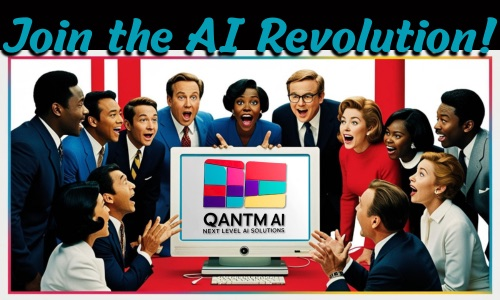

Turn AI ambition into governed, in-production results.
Most AI initiatives stall between the demo and the boardroom. Qantm AI closes that gap with the AI iQ™ approach — readiness assessments, governance guardrails, and hands-on implementation for enterprises and governments moving from pilots to production.
Our Tailored Offerings
AI iQ™ Governance & Ethics Alignment
Ensuring your AI initiatives align with the highest ethical standards
AI iQ™ Readiness Assessment
Discover how ready your organization is to leap into the AI revolution
AI iQ™ Strategy Development
Crafting a winning strategy tailored to your unique aspirations
AI iQ™ Executive Education
Empowering your leadership with AI landscape navigation skills
AI iQ™ GenAI Capability Tuning
Fine-tuning your generative AI capabilities for maximum impact
AI iQ™ GenAI/ML Implementation
Achieving excellence in AI and machine learning operations
Ethical AI Governance
At Qantm AI, we put ethical practices front and center in every engagement. Our comprehensive governance frameworks and robust data privacy safeguards keep AI transparent and accountable—because integrity isn’t a trend, it’s the foundation of AI you can defend to your board, your regulators, and your customers.
Move from AI pilots to production
Talk to Qantm AI about a readiness assessment, a governance framework, or hands-on implementation — and turn stalled initiatives into governed, in-production results.
